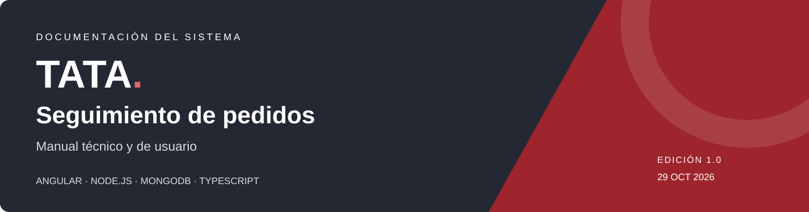
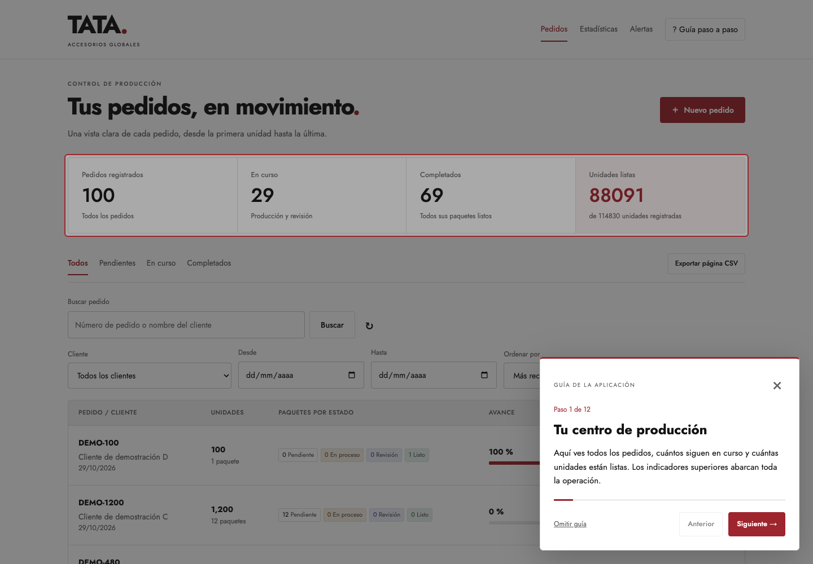
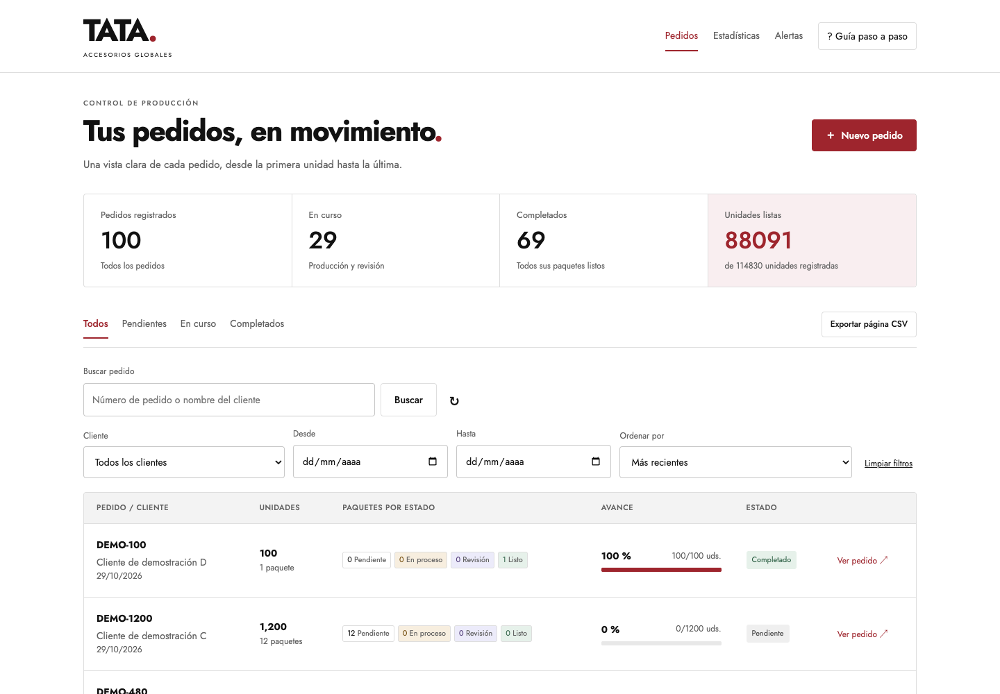
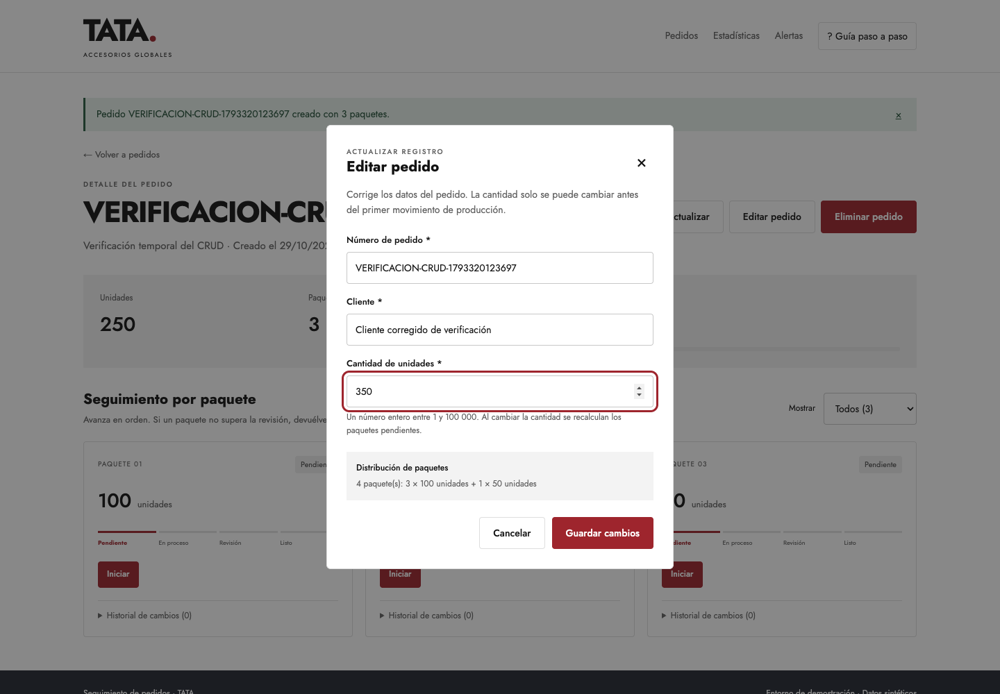
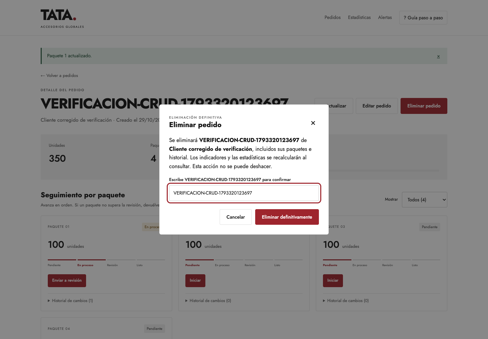
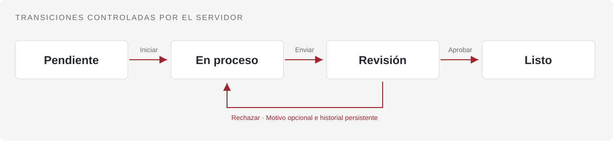
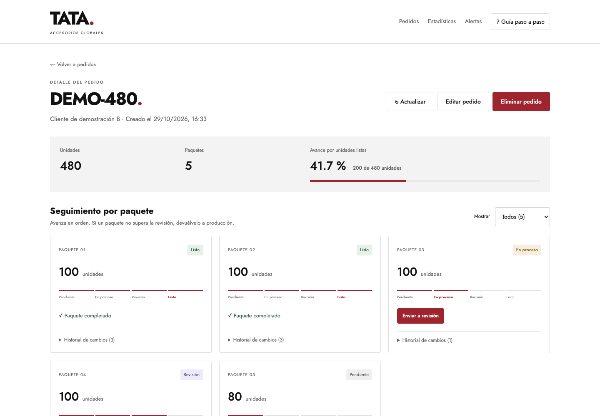
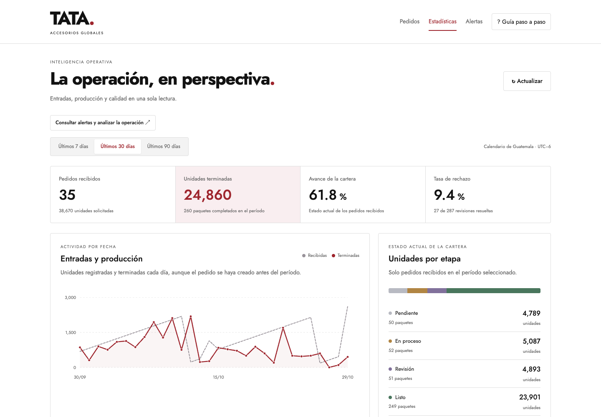
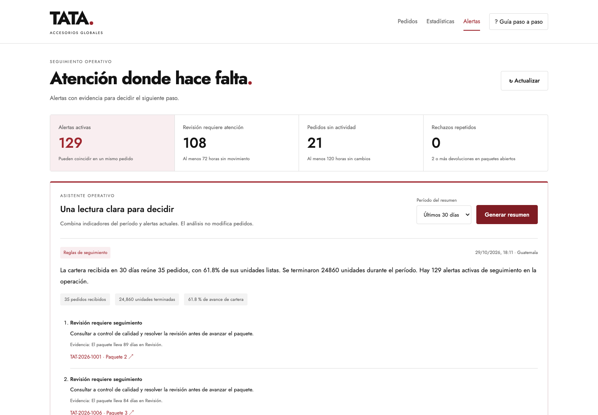
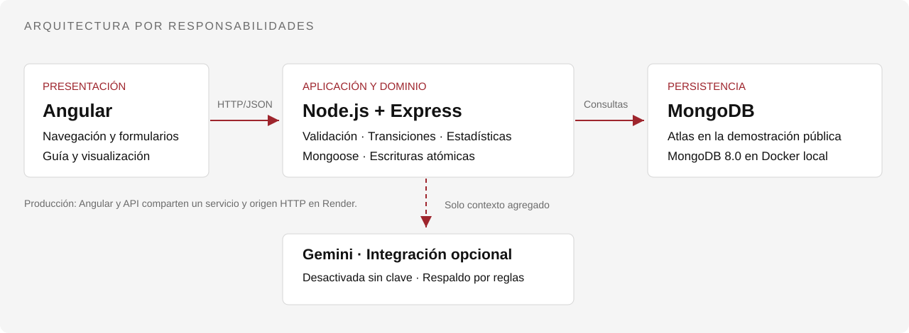

Manual técnico y de usuario
Sistema web de seguimiento de pedidos y control de producción
CRUD de pedidos · Paquetes · Trazabilidad · Estadísticas · Seguimiento operativo
Abrir aplicación · Manual de usuario · Manual técnico · Edición HTML para abrir e imprimir
| Control del documento | |
|---|---|
| Proyecto | Seguimiento de pedidos · TATA |
| Autor | Randall García |
| Edición / fecha | 1.0 · 29 de octubre de 2026 |
| Versión de la aplicación | 0.1.0, según el paquete raíz del repositorio |
| Tipo de entrega | Demostración funcional para evaluación técnica |
| Destinatarios | Usuarios de la aplicación, evaluadores y desarrolladores |
| Repositorio | github.com/RSGarcia2002/seguimiento-pedidos |
Estado de la entrega. Aplicación publicada con persistencia en MongoDB Atlas. La muestra inicial contiene 100 pedidos sintéticos. El resumen operativo funciona por reglas; la integración generativa con Gemini está preparada, desactivada sin clave y verificada mediante simulación HTTP. No hay autenticación ni separación por usuarios.
Contenido
- Presentación, objetivos y alcance
- Manual de usuario: acceso, navegación y recorrido guiado
- Registro y consulta de pedidos
- Producción por paquetes e historial
- Estadísticas e interpretación de indicadores
- Alertas y resumen operativo
- Manual técnico: arquitectura y tecnologías
- Metodología y decisiones de diseño
- Modelo de datos y reglas de negocio
- Instalación y configuración local
- Contrato de la API
- Pruebas y trazabilidad de requisitos
- Despliegue, seguridad y mantenimiento
- Solución de problemas
- Glosario, anexos y referencias
01 · Presentación, objetivos y alcance
El sistema centraliza el seguimiento de pedidos que se producen por paquetes. Permite conocer el estado de cada grupo de unidades, conservar sus movimientos y consultar indicadores operativos. La interfaz está en español y comparte la identidad visual de referencia: superficies claras, tipografía Jost y acento vino.
Objetivo general
Registrar pedidos y controlar su avance mediante paquetes de hasta 100 unidades, con reglas de transición verificadas por el servidor y persistencia en MongoDB.
Objetivos específicos
- Dividir correctamente la cantidad solicitada y evitar números de pedido duplicados.
- Registrar producción, revisión, rechazo y terminación de cada paquete.
- Calcular el avance según unidades terminadas y conservar la trazabilidad.
- Facilitar búsquedas, exportación, estadísticas y seguimiento mediante alertas.
- Ofrecer una instalación reproducible, pruebas automatizadas y documentación verificable.
| Incluido en la entrega | Fuera del alcance actual |
|---|---|
| CRUD de pedidos (crear, consultar, editar y eliminar), paquetes, historial, filtros, CSV, estadísticas, alertas, resumen por reglas y guía interactiva. | Inicio de sesión, roles, separación por empresa, inventario, facturación y notificaciones. |
| Integración opcional de consulta con Gemini y alternativa automática por reglas. | Activación generativa sin clave, modificación autónoma de pedidos y predicciones de entrega. |
02 · Manual de usuario
2.1 Acceso y requisitos de uso
Abra la aplicación publicada en un navegador con JavaScript habilitado y conexión a Internet. No se solicita una cuenta. La interfaz fue comprobada en Chrome, en escritorio y en anchos de 390 y 320 píxeles. En la primera carga, el servicio gratuito puede necesitar tiempo para reactivarse.
| Sección | Dirección | Propósito |
|---|---|---|
| Pedidos | / | Registrar, buscar y consultar pedidos. |
| Detalle | /pedidos/:id | Operar paquetes y consultar su historial. |
| Estadísticas | /estadisticas | Consultar indicadores de 7, 30 o 90 días. |
| Alertas | /operacion | Identificar situaciones de seguimiento y generar un resumen. |
2.2 Recorrido guiado
La primera visita ofrece una bienvenida. Pulse Comenzar recorrido para seguir las explicaciones o Ahora no para entrar directamente. El botón Guía paso a paso del encabezado permite repetir la visita.
- Siguiente / Anterior: cambian de explicación y navegan a la sección correspondiente.
- Omitir guía, cerrar o Escape: terminan el recorrido en cualquier momento.
- Finalizar: cierra el último paso. La preferencia se conserva en el navegador.
La visita tiene 12 pasos cuando existen pedidos y omite el detalle si la base está vacía. Solo consulta información: no crea pedidos, no avanza paquetes y no genera análisis automáticamente.

Figura 1. Recorrido guiado con elemento destacado y contador de pasos.
03 · Registro y consulta de pedidos
3.1 Crear un pedido
| Paso | Acción del usuario | Resultado esperado |
|---|---|---|
| 1 | Ingrese a Pedidos y pulse Nuevo pedido. | Se abre el formulario de registro. |
| 2 | Escriba un número único, el nombre del cliente y una cantidad entera positiva. | La vista previa muestra la división en paquetes. |
| 3 | Revise los datos y pulse Crear pedido. | El servidor valida los datos y guarda el pedido con sus paquetes. |
| 4 | Consulte el detalle abierto después de guardar. | Todos los paquetes comienzan en Pendiente y el avance es 0 %. |
Ejemplo: número PRUEBA-250, cliente Cliente de demostración, cantidad 250. Se generan tres paquetes: 100 + 100 + 50. El número se normaliza a mayúsculas; registrar después prueba-250 se considera un duplicado.
3.2 Buscar, filtrar y ordenar
Use la búsqueda por número o cliente, seleccione el estado y combine cliente exacto, fechas de creación y orden. Pulse Buscar para aplicar los valores. Limpiar filtros restablece el listado.
| Control | Interpretación |
|---|---|
| Todos / Pendientes / En curso / Completados | Clasificación derivada de los estados de los paquetes. |
| Desde / Hasta | Fechas de creación inclusivas, interpretadas según Guatemala (UTC−6). |
| Más recientes / Más antiguos | Orden por fecha de creación. |
| Menor avance | Prioriza el porcentaje de unidades listas más bajo. |
| Último movimiento más antiguo | Ordena por la actualización más antigua. |
El listado muestra 12 pedidos por página de forma predeterminada. Los indicadores superiores representan la operación completa; no se reducen al aplicar filtros. Exportar página CSV descarga únicamente las filas de la página visible.

Figura 2. Panel de pedidos y controles de consulta.
3.3 Editar y eliminar: CRUD completo
| Operación | Procedimiento | Regla de conservación |
|---|---|---|
| Editar pedido | Abra el detalle, pulse Editar pedido, corrija los datos y guarde los cambios. | Puede corregir número y cliente en cualquier estado. La cantidad solo se cambia antes del primer movimiento; al hacerlo se regeneran los paquetes pendientes. |
| Conservar producción | Si la producción ya inició, la cantidad aparece bloqueada. | Al corregir número o cliente se conservan identificadores, estados e historial de todos los paquetes. |
| Eliminar pedido | Pulse Eliminar pedido, lea el aviso, escriba el número exacto y confirme Eliminar definitivamente. | Se eliminan pedido, paquetes e historial; sus aportes desaparecen de las estadísticas en la siguiente consulta. La acción no se puede deshacer. |
| Resolver conflicto | Si otro usuario modificó el pedido, revise los datos actuales antes de repetir. | La versión del documento impide sobrescribir o eliminar cambios nuevos. El formulario ofrece recargar los datos actuales. |
Cancelar o cerrar los diálogos no modifica datos. Una eliminación correcta regresa al listado y muestra el resultado.

Figura 3. Edición de un pedido temporal de verificación antes de iniciar producción.

Figura 4. Confirmación explícita de eliminación. El registro temporal de esta captura se eliminó al terminar la prueba.
04 · Producción por paquetes e historial
Abra Ver detalle en una fila. La cabecera presenta cliente, cantidad, paquetes y avance; debajo aparecen las tarjetas individuales.

Figura 5. Ciclo permitido de producción.
| Estado actual | Acción | Nuevo estado |
|---|---|---|
| Pendiente | Iniciar | En proceso |
| En proceso | Enviar a revisión | Revisión |
| Revisión | Marcar listo | Listo |
| Revisión | Rechazar; registrar un motivo si corresponde | En proceso |
| Listo | Sin transición posterior en esta versión | Listo |
El motivo de rechazo es opcional y admite hasta 300 caracteres. Para consultar los movimientos, despliegue Historial de cambios en la tarjeta. Se muestran fecha, origen, destino y motivo registrado.
Cómo leer el avance. Un pedido de 250 unidades con solo el paquete de 50 terminado tiene un avance de 20 %. Completar uno de tres paquetes no implica necesariamente 33,3 %: el cálculo utiliza unidades.
Si otra solicitud cambia el paquete antes de guardar, la operación se rechaza por conflicto. Actualice el detalle y revise su estado antes de intentar nuevamente.

Figura 6. Seguimiento individual de un pedido existente.
05 · Estadísticas e indicadores
Ingrese a Estadísticas y seleccione los últimos 7, 30 o 90 días. Los valores se calculan desde MongoDB al consultar; las capturas representan un momento de la demostración.
| Indicador | Definición operativa |
|---|---|
| Cartera del período | Pedidos creados en las fechas seleccionadas, con su estado actual. |
| Avance de cartera | Unidades listas de esa cartera divididas entre sus unidades totales. |
| Unidades terminadas | Unidades de paquetes que llegaron a Listo dentro del período, aunque el pedido se haya creado antes. |
| Tasa de rechazo | Rechazos divididos entre revisiones resueltas: aprobaciones más rechazos. |
| Tiempo medio | Horas desde el primer inicio hasta Listo, para los paquetes terminados en el período; incluye ciclos de rechazo. |
| Volumen por cliente | Unidades recibidas en pedidos de la cartera; se muestran hasta ocho clientes. |
El gráfico compara entradas y terminaciones por día. Consultar datos diarios del gráfico ofrece una alternativa tabular. Cuando no existe una muestra para el tiempo medio, la API devuelve null; no se interpreta como duración cero.

Figura 7. Análisis de cartera y actividad del período.
06 · Alertas y resumen operativo
| Alerta | Criterio | Seguimiento sugerido |
|---|---|---|
| Revisión requiere seguimiento | Paquete en Revisión con al menos 72 horas sin movimiento. | Consultar a control de calidad y resolver la revisión. |
| Pedido sin movimiento | Pedido abierto sin actualización durante al menos 120 horas. | Confirmar su planificación y el siguiente paso. |
| Rechazos repetidos | Paquete abierto con dos o más devoluciones a producción. | Examinar los motivos y corregir la causa registrada. |
Las alertas pueden coincidir en un pedido. Se excluyen los pedidos completamente terminados y los paquetes listos. Se presentan hasta 50 alertas por filtro con el total correspondiente. Los umbrales orientan el seguimiento; no certifican incumplimientos de entrega.
6.1 Generar un resumen
- Abra Alertas y elija un período de 7, 30 o 90 días.
- Pulse Generar resumen.
- Revise los indicadores, las prioridades y su evidencia.
- Abra el enlace del pedido para analizar el caso y decidir una acción.
| Modalidad | Estado de la entrega | Comportamiento |
|---|---|---|
| Reglas de seguimiento | Activa, sin clave de proveedor | Combina métricas calculadas y alertas; identifica explícitamente su origen. |
| IA generativa · Gemini | Opcional, desactivada sin clave | Cliente REST implementado y probado contra simulación. No se ha verificado una llamada real a Google. |
La integración opcional comparte solicitudes simultáneas, conserva resultados válidos cinco minutos y limita intentos diarios por proceso. Ante cuota agotada, error, tiempo de espera o referencias inválidas, muestra el resumen por reglas. No dispone de herramientas para modificar pedidos. Consulte la configuración y los límites de la integración.

Figura 8. Evidencia y prioridades del seguimiento operativo.
07 · Manual técnico: arquitectura y tecnologías
7.1 Organización del sistema
La solución utiliza un monorepositorio con npm workspaces. Angular implementa la presentación; Express expone operaciones HTTP; el dominio valida reglas y calcula resultados; Mongoose define documentos e índices de MongoDB. En producción, Express sirve también los archivos Angular compilados, por lo que la interfaz y la API comparten origen.

Figura 9. Componentes y responsabilidades.
7.2 Especificaciones tecnológicas
Las versiones de paquetes corresponden a package-lock.json en esta edición. La rama de Node requerida está definida en package.json; la imagen de MongoDB local está en compose.yaml.
| Tecnología | Versión / configuración | Aplicación en el proyecto |
|---|---|---|
| Angular / Angular CLI | 22.2.4 / 22.2.5 | Componentes standalone, signals, formularios, Router y HttpClient. |
| TypeScript | 6.0.3 · tipado estricto | Tipos compartidos conceptualmente entre contratos, dominio e interfaz. |
| Node.js | Rama 24, desde 24.15.0 | Ejecución de API, herramientas de compilación y pruebas. |
| Express | 5.3.0 | Rutas REST, validación HTTP, errores y entrega del frontend. |
| MongoDB | Imagen local 8.0 · Atlas en publicación | Persistencia documental de pedidos, paquetes e historial. |
| Mongoose | 9.11.4 | Esquemas, validaciones, índices y consultas de persistencia. |
| RxJS | 7.8.2 | Solicitudes HTTP, límites de espera y ciclo de vida de suscripciones. |
| Helmet | 8.3.0 | Cabeceras HTTP de seguridad y política de contenido. |
| SCSS / Jost | Estilos propios / @fontsource 5.3.0 | Diseño adaptable y tipografía servida localmente. |
| Vitest / Supertest | 5.0.5 / 7.3.1 | Prueba del marco Angular y verificaciones HTTP de integración. |
| Playwright | 1.64.1 | Recorridos reales de navegador y comprobaciones móviles. |
| Docker / Render | MongoDB local / servicio web Node | Entorno reproducible de datos y publicación de la aplicación. |
7.3 Estructura del repositorio
seguimiento-pedidos/
├── apps/
│ ├── api/
│ │ ├── src/dominio/ Reglas, validaciones y transiciones
│ │ ├── src/pedidos/ Modelo y rutas de pedidos
│ │ ├── src/estadisticas/ Cálculo de indicadores
│ │ ├── src/operacion/ Alertas, resumen y cliente Gemini
│ │ ├── scripts/ Carga de operación sintética
│ │ └── test/ Dominio, integración y simulación
│ └── web/src/app/
│ ├── pedidos/ Listado, detalle y formularios
│ ├── estadisticas/ Indicadores y gráficos
│ ├── operacion/ Alertas y asistente operativo
│ └── guia/ Recorrido interactivo
├── docs/ Especificaciones, contrato y manual
├── postman/ Contrato y simulación de Gemini
├── pruebas/interfaz/ Recorridos Playwright
├── scripts/ Datos de ejemplo y generación del manual
└── compose.yaml MongoDB persistente para desarrollo08 · Metodología y decisiones de diseño
Se empleó desarrollo guiado por especificaciones (SDD), con implementación incremental y apoyo de Codex. Las reglas y el contrato se documentan antes de modificar comportamientos. La aceptación se comprueba mediante pruebas de dominio, integración, navegador y verificación pública.
| Etapa | Aplicación | Evidencia |
|---|---|---|
| Especificación | Objetivo, reglas, límites y criterios de aceptación. | spec.md |
| Contrato | Operaciones, parámetros, respuestas y errores de la API. | OpenAPI 3.0.3 |
| Implementación incremental | Dominio, persistencia, interfaz y ampliaciones operativas. | Directorios apps/ y control de versiones Git. |
| Verificación por capas | Reglas puras, MongoDB real, recorridos HTTP y navegador. | apps/api/test/ y pruebas/interfaz/ |
| Registro de decisiones | Incidencias, correcciones y comprobación de despliegues. | Bitácora del desarrollo |
Decisiones de ingeniería
- Separación de responsabilidades: reglas de negocio independientes de rutas y presentación.
- Máquina de estados: transiciones explícitas para impedir saltos de producción.
- Concurrencia optimista: comparación del estado y versión del paquete en transiciones, y de la versión del pedido al editar o eliminar.
- Valores derivados: avance y estado del pedido calculados desde sus paquetes.
- Documentos embebidos: pedido, paquetes e historial se consultan y actualizan conjuntamente.
- Datos reproducibles: generación determinista, lote identificado y carga idempotente.
Incidencia documentada: la inferencia inicial de los nombres de timestamps de Mongoose provocó errores de tipos. Se corrigió usando literales con as const, conservando TypeScript estricto. La bitácora registra la corrección y sus comprobaciones.
09 · Modelo de datos y reglas de negocio
| Entidad | Campos principales | Reglas |
|---|---|---|
| Pedido | numero, cliente, cantidad, versionPedido, paquetes, fechas y procedencia. | Número único normalizado; cantidad entera de 1 a 100 000. |
| Paquete embebido | numero, unidades, estado, version, historial. | De 1 a 100 unidades; estado inicial pendiente; versión incrementada por transición. |
| Evento embebido | fecha, origen, destino, motivo. | Se guarda junto con el cambio de estado. Motivo de hasta 300 caracteres. |
Cada edición y transición incrementa versionPedido. Los documentos anteriores sin ese campo se leen como versión cero. Editar y eliminar requieren versionPedidoActual; el servidor compara la versión en la misma operación de escritura.
El índice único de numero resuelve también creaciones simultáneas. Existen índices por fecha de creación y fecha del historial. Las fechas se almacenan como instantes; filtros e indicadores aplican el calendario de Guatemala.
paquetes completos = parte entera de (cantidad / 100)
remanente = cantidad % 100
avance (%) = unidades de paquetes Listos / cantidad × 100
Ejemplo: 250 unidades → [100, 100, 50]
Solo 50 unidades listas → 50 / 250 × 100 = 20 %| Restricción | Valor |
|---|---|
| Número de pedido / nombre del cliente | 1–50 / 1–120 caracteres, sin espacios externos. |
| Cantidad / paquetes por pedido | 1–100 000 unidades / hasta 1000 paquetes. |
| Búsqueda / paginación | Hasta 80 caracteres / 12 filas predeterminadas, máximo 100 por consulta. |
| Cuerpo JSON de la API | Hasta 32 KB por solicitud. |
Datos de demostración
La muestra inicial publicada reúne cuatro pedidos DEMO-* y un lote de 96 pedidos sintéticos, con ocho clientes ficticios y 90 días de actividad. Las fechas, versiones, cantidades y transiciones del lote son coherentes. Los datos no representan operaciones comerciales reales.
La carga ampliada es aditiva e idempotente: conserva pedidos existentes y repetirla no duplica el lote. El total puede cambiar con el uso posterior de la aplicación. Consulte procedencia y definición de métricas.
10 · Instalación y configuración local
10.1 Requisitos
| Recurso | Requisito |
|---|---|
| Node.js | Rama 24, versión 24.15.0 o superior dentro de esa rama. |
| Herramientas | npm y Git; Docker con Compose o un servidor MongoDB disponible. |
| Navegador de pruebas | Chromium de Playwright o Chrome instalado. |
| Puertos locales | 4200: Angular; 3000: API; 27019: MongoDB; 3100: API de pruebas E2E. |
10.2 Obtener el código e instalar dependencias
git clone https://github.com/RSGarcia2002/seguimiento-pedidos.git
cd seguimiento-pedidos
npm ci
cp apps/api/.env.example apps/api/.env10.3 Iniciar MongoDB
docker compose up -d --waitCompose conserva los datos en el volumen datos_mongo. Si Docker Compose no está disponible, utilice esta alternativa; no ejecute ambas en el mismo puerto:
docker run -d --name seguimiento-pedidos-mongo \
--publish 127.0.0.1:27019:27017 \
--volume seguimiento-pedidos-datos:/data/db mongo:8.0
# En ejecuciones posteriores, si el contenedor ya existe:
docker start seguimiento-pedidos-mongo10.4 Configurar variables e iniciar
| Variable | Uso | Valor local de ejemplo |
|---|---|---|
PORT | Puerto de la API. | 3000 |
MONGODB_URI | Conexión obligatoria del servidor. | mongodb://127.0.0.1:27019/seguimiento_pedidos |
NODE_ENV | Modo de ejecución en publicación. | production en Render. |
GEMINI_API_KEY | Secreto opcional para activar IA generativa. | Sin configurar; el resumen funciona por reglas. |
GEMINI_MODEL | Modelo del cliente opcional. | gemini-3.1-flash-lite |
npm run devAbra http://localhost:4200. La salud de la API está en http://localhost:3000/api/salud. El proxy de Angular redirige /api al backend.
Para ejecutar temporalmente con Node 24 cuando la instalación global usa otra rama:
npm exec --yes --package=node@24 -- npm run dev10.5 Cargar ejemplos y compilar
# Cuatro pedidos de ejemplo; requiere la API en ejecución.
npm run datos:ejemplo
# Lote de 96 pedidos; usa la conexión de apps/api/.env.
npm run datos:operacion
# Compilación de producción e inicio en un solo origen.
npm run build
npm startVerifique la conexión seleccionada antes de cargar datos. Para una instalación propia use sus variables; los archivos .env y sus credenciales se mantienen fuera de Git.
11 · Contrato de la API
Base local: http://localhost:3000. Las solicitudes y respuestas de negocio utilizan JSON. El contrato completo se encuentra en docs/openapi.json.
| Método | Ruta | Operación |
|---|---|---|
| GET | /api/salud | Disponibilidad de API y conexión MongoDB. |
| GET | /api/pedidos | Listado, filtros, paginación y resumen global. |
| POST | /api/pedidos | Crear pedido y paquetes. |
| GET | /api/pedidos/:id | Detalle y movimientos. |
| PUT | /api/pedidos/:id | Editar numero, cliente y cantidad con versionPedidoActual. |
| DELETE | /api/pedidos/:id | Eliminar con numeroConfirmacion y versionPedidoActual; devuelve 204. |
| POST | /api/pedidos/:id/paquetes/:paqueteId/transiciones | Avanzar o rechazar con estado y versión esperados. |
| GET | /api/estadisticas?dias=30 | Cartera, actividad, clientes y calidad. |
| GET | /api/operacion/alertas?tipo=todos | Alertas calculadas y umbrales. |
| POST | /api/operacion/analisis | Resumen de consulta; cuerpo {"dias":30}. |
Filtros de pedidos: busqueda, estado, cliente, desde, hasta, orden, pagina y limite. El orden se aplica antes de paginar.
Ejemplo de creación local
curl -X POST http://localhost:3000/api/pedidos \
-H 'Content-Type: application/json' \
-d '{"numero":"PRUEBA-250","cliente":"Cliente de demostración","cantidad":250}'Cuerpo de una transición
{
"accion": "avanzar",
"estadoActual": "pendiente",
"versionActual": 0,
"motivo": ""
}Los identificadores se obtienen del detalle. Use la versión y el estado vigentes; no reutilice los valores del ejemplo después de una transición.
| HTTP | Significado |
|---|---|
| 200 / 201 / 204 | Consulta o edición correcta / creación / eliminación sin cuerpo de respuesta. |
| 400 | Entrada, fecha, filtro o transición no válidos. |
| 404 | Pedido, paquete o ruta inexistentes. |
| 409 | Número duplicado, cantidad bloqueada o conflicto de estado y versión. |
| 413 | El JSON recibido excede el límite configurado. |
| 500 / 503 | Error interno / salud degradada por desconexión de MongoDB. |
{ "error": { "codigo": "NUMERO_DUPLICADO", "mensaje": "Ya existe un pedido con ese número." } }12 · Pruebas y trazabilidad
12.1 Ejecutar las comprobaciones
Inicie MongoDB local en el puerto 27019 y ejecute desde la raíz:
npm run typecheck
npm test
npm run build
npx playwright install chromium
npm run test:e2e
# Alternativa con Chrome instalado:
PLAYWRIGHT_CHANNEL=chrome npm run test:e2e| Nivel | Qué se comprueba | Aislamiento |
|---|---|---|
| Dominio y cálculos | Partición, límites, avance, transiciones, datos sintéticos, métricas y umbrales. | Funciones sin escrituras externas. |
| Integración HTTP + MongoDB | Creación, índices, persistencia, concurrencia, filtros, alertas y resumen. | Base aleatoria propia por ejecución; se elimina al terminar. |
| Interfaz Angular | Identidad y estructura básica de la aplicación. | Entorno de pruebas Vitest. |
| Navegador E2E | CRUD de pedidos, rechazo, 20 % de avance, CSV, estadísticas y recorrido guiado. | API en 3100 y base seguimiento_e2e; elimina sus registros. |
| Proveedor simulado | Respuesta válida, caché, cuota, error, timeout, referencias y límite diario. | Postman local, sin claves reales ni llamadas a Google. |
Última evidencia registrada: compilación aprobada, 50 comprobaciones backend, una prueba Angular, tres recorridos E2E y seis pruebas de integración simulada. Estos resultados describen las ejecuciones documentadas, no una medición de cobertura porcentual.
La integración usa TEST_MONGODB_URI para elegir otro servidor de pruebas. La configuración E2E fija su conexión local. La simulación opcional se reproduce con los comandos de docs/operacion.md.
12.2 Matriz de trazabilidad resumida
| Requisito | Implementación | Verificación |
|---|---|---|
| Partición exacta y límites | src/dominio/pedidos.ts | apps/api/test/dominio.test.ts |
| Unicidad y concurrencia | Índice único, estado y versión esperados. | apps/api/test/integracion.test.ts |
| Estadísticas coherentes | src/estadisticas/calculo.ts | apps/api/test/estadisticas.test.ts |
| Alertas y alternativa gratuita | src/operacion/ | alertas.test.ts y ia.simulacion.ts |
| CRUD y concurrencia del documento | PUT y DELETE atómicos; cantidad protegida e historial conservado. | apps/api/test/crud.test.ts y pruebas/interfaz/crud.spec.ts |
| Operación desde navegador | Panel de pedidos y secciones de análisis. | pruebas/interfaz/pedidos.spec.ts |
| Guía sin cambios de datos | apps/web/src/app/guia/ | pruebas/interfaz/guia.spec.ts |
Integración continua: la plantilla verificacion-github.yml está preparada, pero GitHub Actions no está activado. Su habilitación requiere colocarla en .github/workflows/ con una credencial que tenga permiso workflow.
13 · Despliegue, seguridad y mantenimiento
13.1 Publicación en Render
| Parámetro | Configuración implementada |
|---|---|
| Servicio | Aplicación web Node; API y Angular en el mismo origen. |
| Rama | main, con despliegue automático al publicar cambios de aplicación. |
| Compilación | npm ci --include=dev && npm run build |
| Inicio | node apps/api/dist/servidor.js |
| Variables | NODE_VERSION=24, NODE_ENV=production y MONGODB_URI como secreto. |
| Disponibilidad | /api/salud; Render proporciona PORT. |
En Atlas se autorizan los rangos de salida del servicio. El servidor inicia después de conectar a MongoDB y preparar los índices. Ante SIGTERM o SIGINT deja terminar solicitudes, cierra la conexión y limita el tiempo de apagado.
13.2 Controles implementados
- Validación de cantidades, longitudes, fechas, identificadores y transiciones en el servidor.
- Índice único y escritura atómica de estado, versión e historial.
- Cabeceras Helmet, límite JSON y mensajes de error sin credenciales.
- Búsqueda literal con metacaracteres escapados y protección de campos CSV contra fórmulas.
- Archivos de secretos excluidos de Git; frontend sin claves de proveedores.
- Tipografía local y CSS de producción compatible con la política de seguridad.
Límite operativo: no hay autenticación ni autorización; cualquier visitante puede utilizar las acciones públicas. El historial registra movimientos, pero no identifica un operador. Esta edición utiliza datos sintéticos y no incluye una política automática de copias de seguridad.
13.3 Mantenimiento y documentación
Antes de cambiar una regla, actualice la especificación y el contrato cuando corresponda. Ejecute las pruebas relacionadas, compruebe el despliegue hasta estado activo y revise su comportamiento público. Mantenga el código propio y los comentarios en español.
El README es la fuente de la edición HTML. Para regenerar el manual tras editarlo:
npm run docs:manualAbra docs/manual/index.html en el navegador. La edición conserva las imágenes localmente, incluye navegación y estilos de impresión. Para imprimir o guardar desde el navegador, utilice Ctrl+P o ⌘+P.
14 · Solución de problemas
| Situación | Causa probable | Acción |
|---|---|---|
| La aplicación pública tarda en abrir. | Reactivación del servicio gratuito. | Espere y vuelva a consultar; compruebe /api/salud. |
| La API no inicia o informa desconexión. | MongoDB detenido, URI incorrecta o acceso de red restringido. | Revise contenedor, variables y lista de acceso de Atlas sin compartir secretos. |
| No se puede registrar el pedido. | Datos fuera de límites o número duplicado. | Revise el mensaje, cantidad entera y número normalizado. |
| Un paquete no permite avanzar. | Estado final, transición no permitida o versión obsoleta. | Actualice el detalle y utilice la acción disponible para el estado actual. |
| El porcentaje parece diferente al conteo de paquetes. | Los paquetes tienen cantidades distintas. | Calcule unidades listas / unidades totales; consulte el ejemplo 50/250. |
| Estadísticas y listado muestran totales distintos. | Cartera temporal frente a resumen global. | Revise período, fecha de creación y diferencia entre cartera y actividad. |
| El resumen indica «Reglas de seguimiento». | Modalidad actual o alternativa por indisponibilidad del proveedor. | Puede seguir usándolo; consulte el aviso sobre la modalidad. |
| No reaparece la bienvenida. | La preferencia quedó guardada en el navegador. | Pulse Guía paso a paso en el encabezado. |
| Playwright no encuentra navegador. | Chromium no instalado. | Ejecute npx playwright install chromium o use Chrome con PLAYWRIGHT_CHANNEL=chrome. |
15 · Glosario, anexos y referencias
15.1 Glosario
| Término | Definición en este proyecto |
|---|---|
| Pedido / paquete | Solicitud de unidades / agrupación productiva de hasta 100 unidades. |
| Cartera / actividad | Pedidos recibidos en un período / movimientos ocurridos durante ese período. |
| Concurrencia optimista | Validación del estado y versión esperados antes de aplicar un cambio. |
| Idempotencia del lote | Repetir su carga no vuelve a insertar sus pedidos. |
| SDD / API / E2E | Desarrollo guiado por especificaciones / interfaz de programación / prueba de extremo a extremo. |
15.2 Documentación complementaria
- Especificación y criterios de aceptación.
- Contrato OpenAPI de la implementación.
- Bitácora de decisiones, errores y verificaciones.
- Procedencia de la muestra y fórmulas de indicadores.
- Alertas, resumen gratuito y configuración opcional de Gemini.
- Guía para presentar la aplicación.
- Referencia visual y decisiones de diseño.
15.3 Referencias técnicas oficiales
Fuentes de consulta para las tecnologías empleadas; las versiones instaladas se verifican en el archivo de dependencias del proyecto.
- Angular: descripción del framework.
- Node.js: entorno de ejecución.
- Express: framework HTTP para Node.js.
- MongoDB: modelado documental.
- Mongoose: esquemas y modelos.
- TypeScript: manual del lenguaje.
Seguimiento de pedidos · TATA
Documentación de la implementación · Datos de demostración sintéticos
Volver al contenido